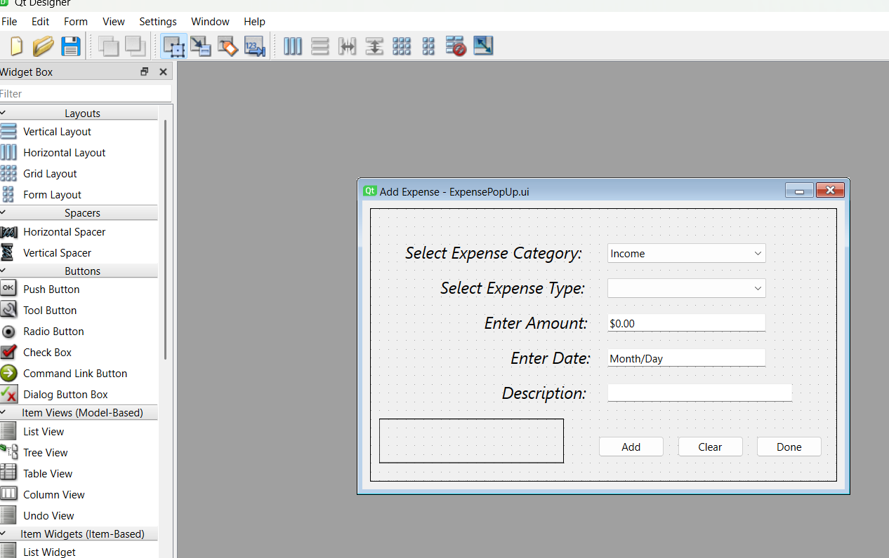
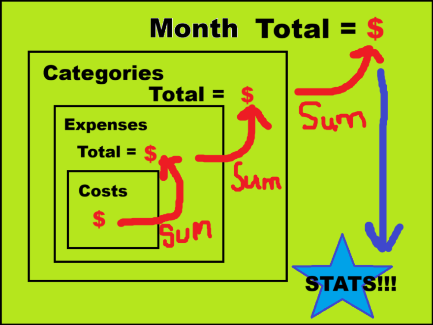

WinkelBudget-Python 1.0.0 Release
Winkelware - Published on November 2, 2026
Overview
The 1.0 release can be downloaded here.
The project repo can be found here.
We've all seen those clips of Dave Ramsey absolutely roasting people because of their credit card debt. As funny as those clips can be, I actually used to be extremely familiar with Dave Ramsey's idea. I had to read Total Money Makeover for an Engineering Economics class in my Undergrad, which, at the bare minimum, convinced me to budget.
There are tons of budget apps available, but I hate them all. They either cost money, not efficient at showcasing relevant data, have too many advertisements, or they are just terrible. Even Dave Ramsey's own app annoyed me beyond measure. With this in mind, to track my expenses I used an Excel spreadsheet to avoid these apps. However, I am terrible with Excel and eventually I ended up just breaking the Excel spreadsheet and was unable to recover. Due to this mistep I decided to code my own budget app that would be fluid, keep records of monthly budgets, and be fluid and (somewhat) easy to use via a GUI. This is where the idea of WinkelBudget came to fruition.
I chose to implement a GUI since I have very little experience in coding applications with one. So while this application has a legitimate usecase for me, it was also a learning experience to get used to building an application with a GUI. In the following sections I will detail the features, technical details and choices, lessons learned, and the future plans for the application.
Features
At base level, this is essentially just a spreadsheet (LOL) coded in Python utilizng GUI elements via QT.
QT elements were implemented via the PyQT6 library.

Specifically though, the following features are present in the 1.0.0 release of this applicaiton:
- An easy to use, color-supported table separated into categories for monthly expenses
- Ability to enter planned expenses and the actual values spent
- Functionality to auto calculate the differnce between planned and actual expense values
- Ability to add and remove different categories
- Ability to expense totals by category
- Color coding base on monetary values for quick understanding
- Tab widget providing quick access to relevant metrics and data
- Overall budget statistics: Total income, Total spending, Total difference
- List of expenses for a given category, shows amount spent, a description, and the date it occurred
- Spending Bar Graph
- Spending Pie Chart
- Interactive popups for editing categories and adding expense values
- Functionality to store notes regarding the month
- Multi-widget view showing key data
- Coded in Python via accessible and cross-platform libraries to run on any operating system that supports Python3
Technical Details
As stated before, this is my first "large-scale" (airquotes on that heavily) GUI project. QT was used over other Python options due to it's powerful designer tool which I showed earlier, but also because it is present in other programming languages, notably C++. Qt makes it easy to load any designed UI using its loadui function. Through this function it is possible to load multiple UI files and cateogrize them within their own Class (a class per screen essentially). The main budget screen was implemented into its own class and so were both popup menus. Separating them into their own classes greatly increased development efficiency due to the ease of organization and modularity. Simply calling an instance of a screen class made all the screens very simple to call in relation to button presses or events. Interestingly enough, the main BudgetScreen.ui file is actually just widget that can be displayed over the MainWindow screen for the entire program. This gave me the ability to use the status bar functionality that is unique to QT MainWindows despite the variety of different screens that might be displayed. Another reason this form was implemented was because it is extensible in the future. When I eventually add an entirely GUI-focused launch screen (removing the cmd line month/year specification), the program will simply shuffle these stacked widgets while keeping the same MainWindow that "runs" the program. Once again, this design philosphy keeps the screens largely modular and independent of each other, allowing for easy deployment, but also more segmented code-bases which sped development up.
As for tracking the data and calculating it, I developed 4 more objects to complete that functionality.
I first created the Month object which essentially is the main container for all important data within the budget calculations.
Since the budget app is split up according to months, this was the simplest container to use and the most straight forward.
From here, I made 3 other "sub objects" that are all nested under the Month object.
The Category object exists to carry stats and totals for each larger, umbrella category (Savings, Transporation, Food, etc) and allow for easy math operations on just one category.
The next layer, the Expense object exists to carry individual expense types under an category.
The Transportation category holds both expenses for Gas as well as Vehicle Maintenance.
You could also add Tolls Bus/Subway passes, etc if necessary (completely up to the user!).
They are generally laid out the same as the Category objects, lots of their internal methods are to do easy math according to only that expense type (which makes subsequent math easier).

Final section I'll talk about (because honestly the longer this is going on, the more I am losing myself) is the persistence/data storage method. I opted for files on disk! (applause) In my original code, before I completely burned everything down and started over about 6 months ago, I had a Year object as the final stage of the chain talked about in the above paragraph. This was extremely annoying to work with and lead to very complicated referencing, and it was just terrible. After my hiatus from this project I became enlightened to Keep It Simple Stupid. I decided to just store everything in folders. I created the data folder which is not visible in the repo. It is created on disk when the program is run and a month is saved. The data folder is hierarchical by year and a backups folder. Each year folder contains a .dat file that stores the Pickled Month object (which, if you recall, holds all other objects in it). When the program is loaded, the application checks for the existence of the specified .dat file accoridng to the command line, if it does not exist, a blank Month object is used instead. This blank object is then serialized via Python's Pickle module onto disk in the appropriate structure. To accomplish this I create a Serializer class that holds methods for saving the data to disk. When the BudgetScreen is reached, a new instance of the Serializer class is created to save the data to the appropriate file and move backups accordingly. Finally, when the user decides the click the Save button, the serializer will Pickle the Month object and save it to disk — where it can be loaded from on next program startup.
With that, I am pretty confident I covered everything important. There are some other quirks, but that will all be explained in some more in-depth documentation (if I ever release it). For now, if you have any other questions, read the source code and use the application. I feel it is rather straight forward to use and understand.
The Future
I do plan to update and improve this application, though I do not have a specific release cadence. I really wanted to release it so that I could stop giving myself the excuse that "it isn't done, you don't need to track everything so rigorously just yet." It is released now, so I have to use it. I plan on taking my own user feedback and structure my first feature update sometime in 2027 probably. If there are any crazy bugs I will attempt to patch those when I am aware of them and release hotfixes accordingly. If you find any bugs or crashes please create a Github issue.
Now, here are some planned features that I want to implement in the future:
- Themes (muh darkmode)
- Generic UI improvements
- Charts and Graphs over a selected timeframe
- Removal of cmd line launch, GUI launch page (The coverscreen is already in the Repo)
- Communication with some kind of external webserver to pull expense updates
- Tracking saved money somehow